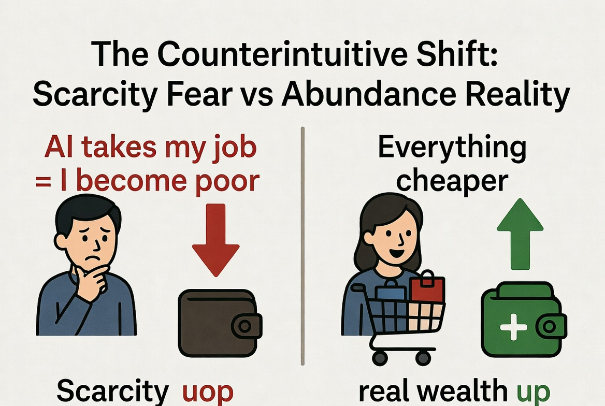
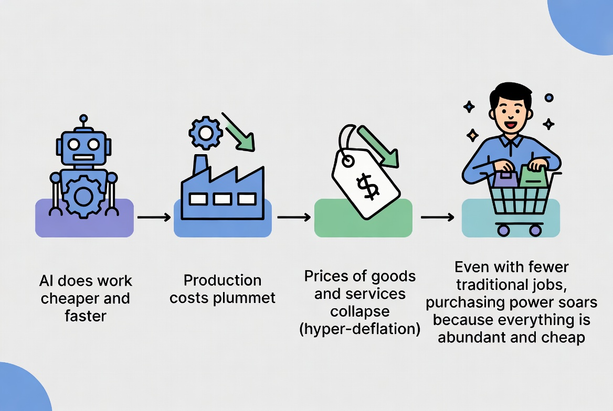
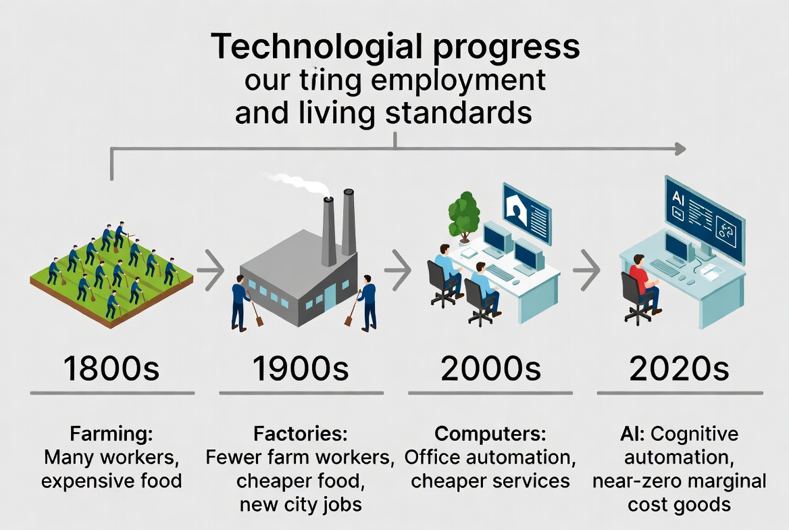
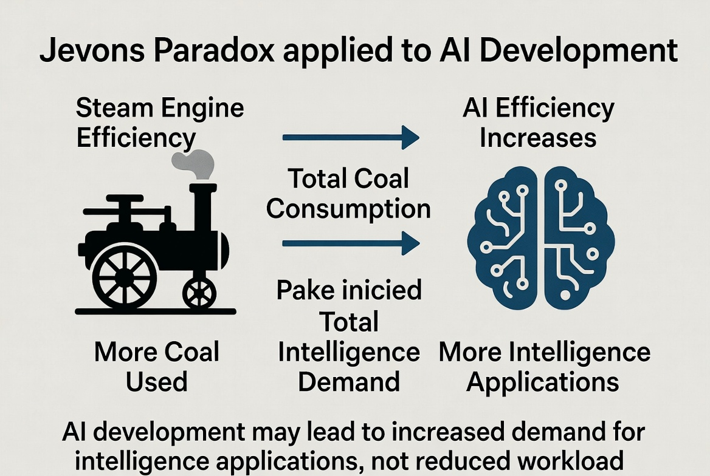
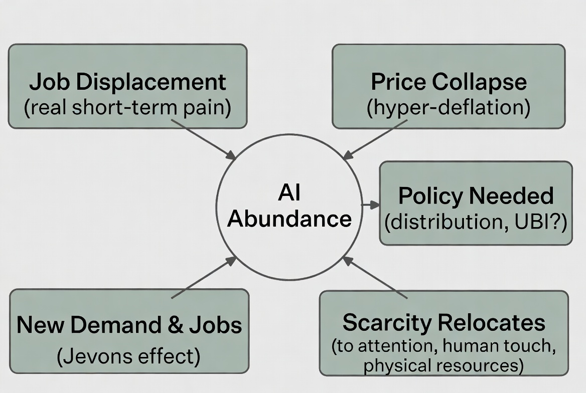
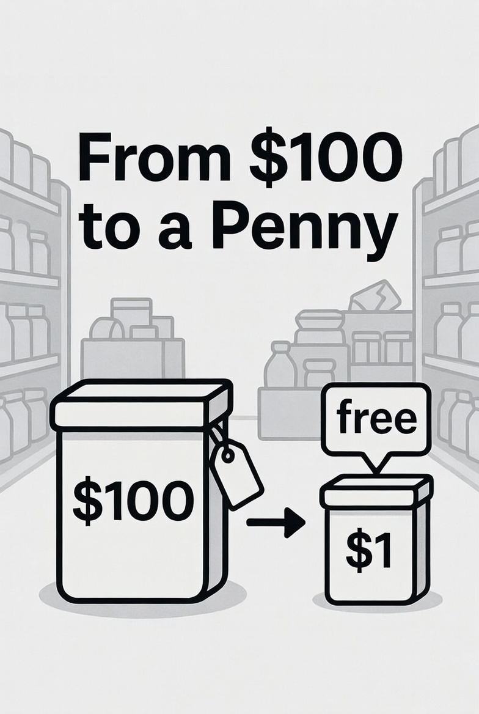

The Fear Everyone Feels
Here is the common worry in plain language: AI gets really good at the work people do. Companies need fewer workers. Lots of people lose their jobs. Without a paycheck, those people become poor. Society ends up with high unemployment and widespread hardship.
That story feels obvious. It is also incomplete in a way that changes the entire conclusion.
The missing piece is what happens to the price of almost everything when machines can produce it far more efficiently. When production costs collapse, prices fall. Sometimes they fall a lot. That is called deflation — and when it comes from exploding productivity rather than economic collapse, it is a form of abundance.

The Counterintuitive Core
Imagine AI (and the robots and software it powers) becomes so capable that it can handle a huge share of the tasks that currently require human labor. The cost of producing most goods and many services drops dramatically. A report that once cost a company $5,000 in analyst time might cost $5. A legal brief, a marketing campaign, a medical image analysis, a piece of software — all become far cheaper to create.
When the cost of making something falls, competition usually forces the selling price down too. Over time, many things that used to be expensive become cheap or nearly free. This is not theoretical. We have already watched it happen with information, photography, computation, and many manufactured goods.
Now think about a person who lost a traditional job. In the old scarcity mindset they are simply poorer. But if the cost of food, clothing, entertainment, education materials, basic healthcare diagnostics, transportation coordination, and hundreds of other things has fallen sharply, that person’s remaining money (or any support system) buys far more than it used to. Their real standard of living can rise even while their nominal income falls.
This is the heart of the counterintuitive claim: the same force that displaces jobs (extreme productivity) is also the force that makes the products of those jobs abundant and cheap. Poverty in the material sense becomes harder to achieve because scarcity itself is retreating.

This Pattern Is Not New
Look at farming. Two hundred years ago a large share of the population worked the land just to feed everyone. Today a tiny fraction of workers produces far more food than before. The “job loss” in agriculture was enormous. Yet food became dramatically cheaper and more plentiful, and the people who left the farms found work in new industries that could not have existed when most labor was locked into growing calories.
The same story repeated with textiles, manufacturing, and many office tasks. The Luddites of the early 1800s smashed machines because they correctly saw that the machines would take their specific jobs. What they could not see was that the cheaper cloth would raise living standards across society and free labor for new kinds of work.
Economists call the belief that technology permanently reduces the total number of jobs the Luddite fallacy (or sometimes the lump-of-labor fallacy). History has repeatedly shown that total employment tends to rise over long periods even as specific occupations disappear, because productivity growth expands what is possible.

Why Demand Often Rises (Jevons Paradox)
There is another counterintuitive force at work. When something becomes much cheaper and more efficient, people often use a lot more of it. In the 1800s, better steam engines made coal use more efficient. Instead of reducing total coal consumption, it exploded — because suddenly coal-powered machines made sense for far more purposes.
This is Jevons Paradox. Applied to AI, making “intelligence” and cognitive work extremely cheap does not necessarily shrink the total amount of such work. It can expand the number of things we decide are worth doing. More analysis, more design iterations, more personalized education, more legal checks, more creative experiments — many of which were previously too expensive to bother with.
The result is not always fewer jobs overall. Sometimes it is different jobs, or more of certain kinds of jobs, precisely because the underlying capability became abundant.

The Important Nuances
None of this means the transition is painless or automatic. Several real complications exist:
- Short-term displacement is real. Specific people in specific roles can lose income quickly while the broader price effects take longer to fully appear.
- Distribution matters. If the gains from productivity are captured mostly by capital owners, and if society does not have mechanisms to share the abundance (lower prices help everyone, but additional transfers or new ownership models may still be needed), inequality can widen even as average living standards rise.
- Scarcity does not vanish; it relocates. Physical resources, energy, land, human attention, genuine human connection, unique experiences, and accountability remain scarce. AI can make many outputs abundant while making the remaining bottlenecks more valuable.
- Comparative advantage still exists. Even if AI is better at almost everything, humans can still have roles where the relative cost or the preference for a human presence matters.
- Policy and institutions matter. How societies handle the transition — education, safety nets, ownership of the AI systems, competition policy — will shape whether the abundance is widely shared.
The optimistic case is not “no one loses a job.” It is that the overall material pie grows so large, and so many goods become so cheap, that the typical person’s access to useful things improves dramatically even through a turbulent labor market.


Putting It Together
The term people are reaching for is not a single perfect label, but the underlying idea is clear. The fear that AI success equals mass poverty rests on an incomplete model of how economies work. Extreme productivity does not just eliminate tasks; it expands the supply of the outputs of those tasks until their prices fall. Falling prices raise real purchasing power. That is the abundance side of the ledger.
Marc Andreessen has called the version of this story that ends in universal poverty a “great economic fallacy.” Even in the extreme case where many traditional jobs disappear, the hyper-deflation of prices means the remaining income (or any broadly shared claim on the productive capacity) goes much further.
History’s lesson is that societies that allow the productivity gains to spread — through lower prices, new industries, and adaptive institutions — end up richer in the things that matter for daily life. The transition is disruptive. The destination, if the economics hold, is not scarcity. It is abundance with a different set of scarcities.
Keep Digging
This is one of the central economic questions of the next decade. The diagrams above are simplifications. Real outcomes will depend on how fast capabilities advance, how competition works, and what policy choices societies make.
Sources & Further Reading
- Marc Andreessen on the “great economic fallacy” of AI-driven poverty despite productivity gains (Stripe Cheeky Pint podcast / Fortune coverage, 2025).
- William Stanley Jevons, The Coal Question (1865) — origin of Jevons Paradox.
- Economics literature on the Luddite fallacy and the lump-of-labor fallacy.
- Discussions of AI abundance, hyper-deflation, and scarcity relocation across economic and tech commentary (2023–2026).
- Historical employment and productivity data showing long-run rises in living standards alongside sectoral job shifts.